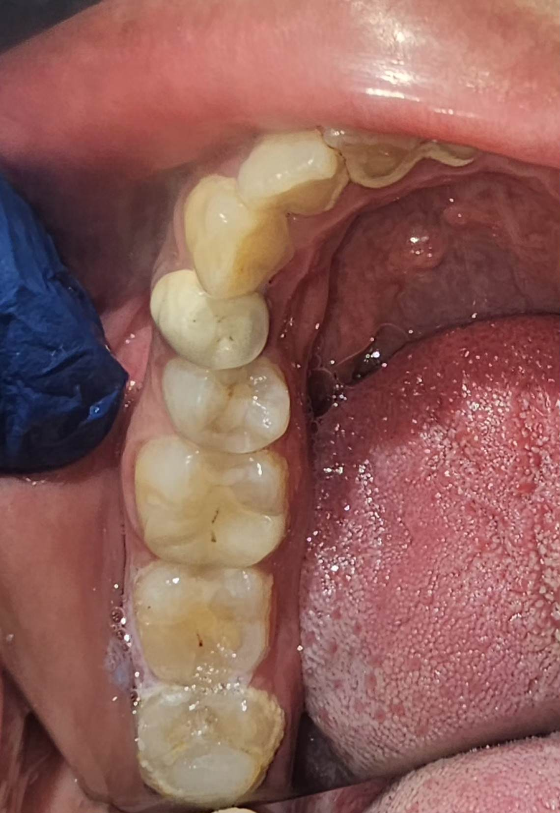
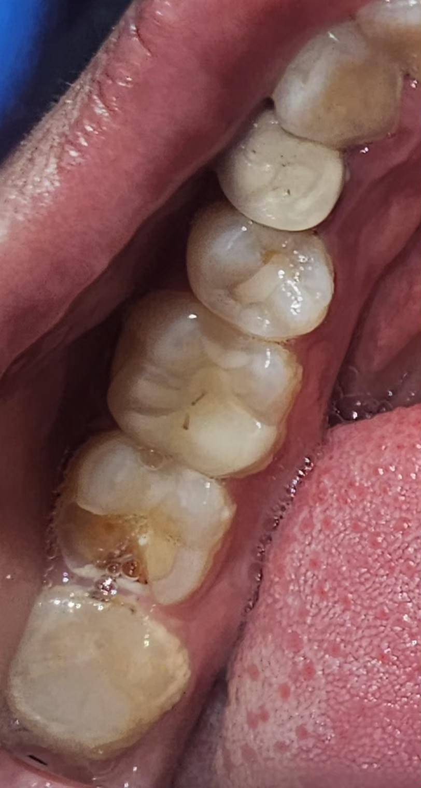

A durable, custom-milled lithium disilicate (E-max) ceramic restoration designed to fit precisely within damaged cusps, reinforcing natural tooth structure without full crown coverage.
E-max Inlays offer an advanced, minimally invasive solution for restoring posterior teeth with moderate decay or fracture. Crafted from high-strength lithium disilicate glass-ceramic, E-max inlays fit tightly into the prepared tooth cavity like a precise puzzle piece, restoring full natural aesthetics and structural integrity. By preserving significantly more natural enamel and dentin than full crowns, E-max inlays provide high translucency, exceptional wear resistance, and long-term durability under heavy chewing forces.
Fits within the cusps of the tooth for moderate cavity restorations.
Covers one or more cusps for more extensive damage repair.
Computer-designed and milled for perfect fit and function.
Resin cement creates a seamless, leak-proof seal.
Removes less tooth structure compared to full crown preparation.
Lithium disilicate withstands heavy chewing forces for years.
Translucent ceramic matches the natural tooth perfectly.
CAD/CAM technology ensures precise fit and optimal function.
Decay removal and conservative tooth preparation.
Precise digital scan for computer-aided design.
Custom-milled from a single block of E-max ceramic.
Precision bonding for a seamless, permanent restoration.
Real patient e-max inlay transformation at Muskan Dental.

Inlays are fabricated in a lab for superior strength, fit, and longevity. They last much longer than composite fillings and are more resistant to wear.
The procedure is performed under local anesthesia and is completely painless. Most patients experience no discomfort during or after.
With proper oral care, E-max inlays can last 15-20 years, significantly outlasting traditional composite fillings.

Discover E-max inlays — the minimally invasive solution that preserves your tooth while restoring full strength and beauty.